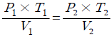
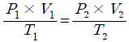
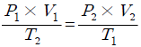
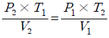
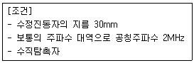

초음파비파괴검사기능사 (2010-01-31 기출문제)
1과목: 초음파탐상시험법
1. 기체방사성 동위원소법에는 kr-85를 추적가스로 많이 사용한다. 이때 방출되는 이온으로 옳은 것은?
- X선
- 알파선
- 베타선
- 감마선
(정답률: 54%)

2. 초음파탐상검사의 진동자 재질로 사용되지 않는 것은?
- 수정
- 황산리튬
- 할로겐화은
- 티탄산바륨
(정답률: 78%)
3. 자분탐상시험방법에 대한 설명으로 옳은 것은?
- 잔류법은 시험체에 외부로부터 자계를 준 상태에서 결함에 자분을 흡착시키는 방법이다.
- 연속법은 시험체에 외부로부터 주어진 자계를 소거한 후 결함에 자분을 흡착시키는 방법이다.
- 잔류법은 시험체에 잔류하는 자속밀도가 결함누설자속에 영향을 미친다.
- 연속법은 결함누설자속을 최소로 하기 위해 포화자속밀도가 얻어지는 자계의 세기를 필요로 한다.
(정답률: 55%)
4. 두께100mm인 강판 용접부에 대한 내부균열의 위치와 깊이를 검출하는데 가장 적합한 비파괴검사법은?
- 방사선투과시험
- 초음파탐상시험
- 자분탐상시험
- 침투탐상시험
(정답률: 84%)
5. 시험체를 가압 또는 감압하여 일정한 시간이 지난 후 압력변화를 계측하여 누설검사하는 방법을 무엇이라 하는가?
- 기포 누설검사
- 암모니아 누설검사
- 방치법에 의한 누설검사
- 전위차에 의한 누설검사
(정답률: 93%)
6. 침투탐상시험의 원리에 대한 설명으로 옳은 것은?
- 시험체내부에 있는 결함을 눈으로 보기 쉽도록 시약을 이용하여 지시모양을 관찰하는 방법이다.
- 결함부에 발생하는 자계에 의한 자분의 부착을 이용하여 관찰하는 방법이다
- 결함부에 현상제를 투과시켜 그 상을 재생하여 내부결함의 실상을 관찰하는 방법이다.
- 시험체 표면에 열린 결함을 눈으로 보기 쉽도록 시약을 이용하여 확대된 지시모양을 관찰하는 방법이다.
(정답률: 90%)
7. 이상 기체의 압력이 P, 체적이 P, 온도가 T 일 때 보일- 샤를의 법칙에 대한 공식으로 옭은 것은?




(정답률: 66%)
8. 지름 20cm, 두께 1cm, 길이 1m 인 관에 열처리로 인한 축방향의 균열이 많이 발생하고 있다. 이러한 균열을 탐지하기 위하여 자분탐상검사를 실시하고자 한다. 어떤 방법이 가장 적절하겠는가?
- 프로드에 의한 자화
- 요크에 의한 자화
- 전류관통법에 의한 자화
- 케이블에 의한 자화
(정답률: 64%)
9. 시험체의 표면이 열려 있는 결함의 검출이 가장 적합한 비파괴검사법은?
- 침투탐상시험
- 초음파탐상시험
- 방사선투과시험
- 중성자투과시험
(정답률: 95%)
10. 두께가 일정하지 않고 표면 거칠기가 심한 시험체의 내부 결함을 검출할 수 있는 비파괴검사법으로 옳은 것은?
- 방사선투과검사
- 자분탐상검사
- 초음파탐상검사
- 와전류탐상검사
(정답률: 77%)
11. 표면코일을 사용하는 와전류탐상시험에서 시험코일과 시험체 사이의 상대 거리의 변화에 의해 지시가 변화하는 것을 무엇이라 하는가?
- 공진 효과
- 표피효과
- 리프트 오프 효과
- 오실로스코프 효과
(정답률: 66%)
12. 각종 비파괴검사법과 그 원리가 틀리게 짝지어진 것은?
- 방사선투과검사-투과성
- 초음파 탐상검사-펄스반사법
- 자분탐상검사-자분의 침투력
- 와전류탐상검사-전자유도작용
(정답률: 80%)
13. 방사선작업 종사자가 착용하는 개인피폭 선량계에 속하지 않는 것은?
- 서베이미터
- 필름배지
- 포켓도시미터
- 열형광선량계
(정답률: 88%)
14. 와전류탐상검사에 대한 설명으로 올바른 것은?
- 표면 및 내부 결함 모두가 검출 가능하다
- 금속, 비금속 등 거의 모든 재료에 적용 가능하고 현장적용을 쉽게 할 수 있다.
- 비접촉으로 고속탐상이 가능하다.
- 미세한 균열의 성장유무를 감시하는데 적합하다.
(정답률: 78%)
15. A스캔 장비의 화면에서 저면 반사파의 강도(음파)를 나타내는 것은?
- 반사파의 거리
- 반사파의 밝기
- 반사파의 폭
- 반사파의 높이
(정답률: 71%)
16. 초음파탐상검사에서 초음파가 매질을 진행할 때 진폭이 작아지는 정도를 나타내는 감쇠계수의 단위로 옳은 것은?
- dB/s
- dB/C
- dB/cm
- dB/m2
(정답률: 80%)
17. 원거리음장의 빔(beam)분산에 영향을 미치는 요소와 가장 거리가 먼 것은?
- 주파수
- 재질의 두께
- 탐촉자의 크기
- 재질에서의 음파 속도
(정답률: 61%)
18. 초음파의 빔분산에 대한 설명으로 옳은 것은?
- 초음파의 속도가 느릴수록 빔분산각은 커진다.
- 초음파의 주파수가 작을수록 빔분산각은 작아진다.
- 탐촉자의 파장이 작을수록 빔분산각은 커진다.
- 탐촉자의 진동자 직경이 클수록 빔분산각은 작아진다.
(정답률: 66%)
19. 탐상면에 수직한 방향으로 존재하는 결함의 깊이를 측정하는데 유리한 주사방법은?
- 탠덤주사
- 종방향 주사
- 횡방향 주사
- 지그재그 주사
(정답률: 69%)
20. 매질 내에서 초음파의 전달 속도에 가장 큰 영향을 미치는 것은?
- 밀도와 탄성계수
- 자속밀도와 소성
- 선팽창계수와 투과율
- 침투력과 표면장력
(정답률: 80%)
2과목: 초음파탐상관련규격
21. 두께 15mm인 강판의 탐상면에서 깊이 7.6mm부분에 탐상면과 평행하게 위치해 있는 결함을 검사하는 가장 효과적인 초음파탐상방법은?
- 판파 탐상
- 표면파 탐상
- 종파에 의한 수직탐삼
- 횡파에 의한 경사각탐상
(정답률: 74%)
22. 초음파탐상시험에서 근거리음장 길이와 직접적인 관계가 없는 인자는?
- 탐촉자의 직경
- 탐촉자의 주파수
- 시험체에서의 속도
- 접촉 매질의 접착력
(정답률: 68%)
23. 수침법으로 초음파탐상시 CRT 스크린상에 나타나는 물거리 지시파 부분을 제거하려면 무엇을 조정하여야 하는가?
- 리젝트 조정
- 펄스 길이 조정
- 소인 지연 조정
- 스위프 넓이 조정
(정답률: 75%)
24. STB-A1 표준시험편의 주된 사용 목적이 아닌 것은?
- 측정 범위의 조정
- 탐상 감도의 조정
- 경사각 탐촉자의 굴절각 측정
- 경사각 탐촉자의 분해능 측정
(정답률: 86%)
25. 횡파에 대한 설명 중 틀린 것은?
- 공기 중에는 횡파가 존재할 수 없다.
- 고체에서는 횡파와 종파가 존재한다.
- 음파 진행방향에 대해 수직방향으로 진동 한다.
- 액체 내에서는 횡파만이 존재 할 수 있다.
(정답률: 81%)
26. 금속재료의 펄스반사법에 따른 초음파탐상 시험방법 통칙(KS B 0817)에서 흠집의 치수 측정 항목에 포함 되지 않는 것은?
- 등가결함 위치
- 등가결함 지름
- 흠집의 지시길이
- 흠집의 지시높이
(정답률: 54%)
27. 강 용접부의 초음파탐상 시험방법(KS B 0896)에 따른 경사각탐상에서 탐상장치의 입사점, STB 굴절각은 작업개시시에 조정하며, 또한 조정의 조건이 유지되고 있는 것을 확인하기 위하여 작업시간 몇 시간 이내마다 점검 하는가?
- 2시간
- 4시간
- 6시간
- 8시간
(정답률: 79%)
28. 압력용기용 강판의 초음파탐상검사방법(KS D 0233)에서 강판의 두께가 60mm를 초과할 때 사용되는 탐촉자는?
- 수직 탐촉자
- 이진동자 수직 탐촉자
- 이진동자 수직 탐촉자 및 수직 탐촉자
- 경사각 탐촉자
(정답률: 52%)
29. 강용접부의 초음파탐상 시험방법(KS B 0896)의 경사각탐상에서 STB 굴절각의 측정에 사용되는 표준시험편은 어느 것인가?
- STB-N1
- STB-A2
- STB-G
- STB-A1
(정답률: 64%)
30. 강용접부의 초음파탐상 시험방법(KS B 0896)에 의한 흠 분류시 2방향 이상에서 탐상한 경우에 동일한 흠의 분류가 2류, 2류, 3류, 1류로 나타났다면 최종 등급은?
- 1류
- 2류
- 3류
- 4류
(정답률: 91%)
31. 강용접부의 초음파탐상 시험방법(KS B 0896)에 따라 경사각탐상으로 탐촉자를 접촉시키는 부분의 판 두께가 75mm 이상, 주파수 2MHz, 진동자 치수 20x20mm 의 탐촉자를 사용하는 경우, 흠의 지시길이 측정방법으로 옳은 것은?
- 최대 에코높이의 1/2을 넘는 탐촉자의 이동거리
- 최대 에코높이의 1/3을 넘는 탐촉자의 이동거리
- 최대 에코높이의 1/4을 넘는 탐촉자의 이동거리
- 최대 에코높이의 1/8을 넘는 탐촉자의 이동거리
(정답률: 78%)
32. 초음파탐상 시험용 표준시험편(KS B 0831)에서 탐상시험에 사용되는 N1형 STB 표준시험편의 설명으로 틀린 것은?
- 사용되는 탐촉자의 종류는 수침탐촉자이다.
- 사용되는 탐촉자의 주파수는 2MHz를 쓴다.
- 사용되는 탐촉자의 진동자재료는 수정을 쓴다.
- 사용되는 탐촉자의 진동자치수는 지름이 20mm이다.
(정답률: 69%)
33. 강용접부의 초음파탐상 시험방법(KS B 0896)에서 탐상기에 필요한 성능 중 시간축 직선성은 측정값의 몇%이내의 범위이어야 하는가?
- ±1%
- ±2%
- ±3%
- ±5%
(정답률: 89%)
34. 초음파 탐촉자의 성능측정 방법(KS B ⑤35)에 따라 다음 [조건]의 탐촉자에 대한 표시 방법은?

- 30B2N
- 2A30Q
- 2Q30N
- 2Z30A
(정답률: 93%)
35. 금속재료의 펄스반사법에 따른 초음파탐상 시험방법 통칙(KS B 0817)의 적용범위로 옳은 것은?
- 금속재료의 불건전부를 검출하여 평가하는 방법이다.
- 비금속재료의 외부에 존재하는 불건전부를 검출하는 방법이다.
- 비금속재료의 내부 및 표면에 존재하는 불건전부를 검출하는 방법이다.
- 금속재료의 내부 또는 외부에 존재하는 불건전부를 검출하여 평가하는 방법이다.
(정답률: 65%)
36. 알루미늄의 맞대기용접부의 초음파경사각탐상 시험방법(KS B 0897)에서 모재 두께가 25mm 일 때 흠의 지시길이가 8mm 이고, 구분이 B종이라면 흠의 분류는?
- 1류
- 2류
- 3류
- 4류
(정답률: 79%)
37. 강용접부의 초음파탐상 시험방법(KS B 0896)에 의한 수직 탐상시 에코 높이의 영역 III은 어느 범위에 해당하는가?
- H선 초과
- L선 이하
- M선 초과 H선 이하
- L선 초과 M선 이하
(정답률: 71%)
38. 강용접부의 초음파탐상 시험방법(KS B 0896) 부속서에 따라 용접선 위의 주사에 의한 시험 결과, 흠의 분류로 옳은 것은?
- 1류
- 2류
- 3류
- 계약 당사자 사이의 협정에 따른다.
(정답률: 80%)
39. 강용접부의 초음파탐상 시험방법(KS B 0896)에서 정한 탐상기에 필요한 기능의 설명으로 틀린 것은?
- 탐상기는 1탐촉자법, 2탐촉자법 중 어느 것이나 사용할 수 있는 것으로 한다.
- 탐상기는 적어도 2MHz 및 5MHz의 주파수로 동작하는 것으로 한다.
- 게인 조정기는 1스텝 5dB 이하에서, 합계 조정량이 10dB이상 가진 것으로 한다.
- 표시기는 표시기 위에 표시된 탐상 도형이 옥외의 탐상작업에서도 지장이 없도록 선명하여야 한다.
(정답률: 82%)
40. 건축용 강판 및 평강의 초음파탐상시험에 따른 등급분류와 판정 기준(KS D 0040)에서 2진동자 수직탐촉자에의 한 결함의 분류 표시기호가 △이 었다. 흠 에코높이에 대한 옳은 설명은?
- 압연방향에 평행하게 주사할 경우 DM선을 초과한 것
- 압연방향에 직각으로 주사할 경우 DH선을 초과한 것
- 압연방향에 평행하게 주사할 경우 DL선 초과 DM선 이하인 것
- 압연방향에 직각으로 주사할 경우 DL선 초과 DM선 이하인 것
(정답률: 78%)
3과목: 금속재료일반 및 용접일반
41. 웹 페이지에서 사용할 수 있는 이미지는 8비트 색상을 지원하는 대표적인 이미지 압축 포맷은?
- GIF
- JPEG
- TIF
- BMP
(정답률: 29%)
42. 채팅할 때의 네티켓으로 옳지 않은 것은?
- 마주보고 이야기 하는 마음가짐으로 임한다.
- 대화방에 처음 들어가면 지금까지 진행된 대화의 내용과 분위기를 어느 정도 경청하는 것이 좋다.
- 만나고 헤어질 때에는 인사를 한다.
- 비어, 속어, 은어 등을 사용하여 대화 한다.
(정답률: 53%)
43. 다음 중 시스템 프로그램의 종류가 아닌 것은?
- 적재 프로그램
- 운영체제
- 라이브러리 프로그램
- 응용프로그램
(정답률: 12%)
44. 인터넷에서 사용자가 원하는 정보를 탐색할 때 사용하는 것은?
- 쿠키
- 윈도미디어
- 검색엔진
- 플러그 인
(정답률: 43%)
45. 인터넷 상의 사이트 주소의 기관 성격 중 국제 기구를 의미 하는 것은?
- edu
- gov
- int
- com
(정답률: 22%)
46. 단조나 압연을 하여 가공경화 한 금속재료를 고온으로 가열할 때 일어나는 현상이 아닌 것은?
- 내부 응력의 제거
- 결정입자의 성장저지
- 재결정
- 회복
(정답률: 64%)
47. 비커스 경도계에서 사용하는 압입자는?
- 꼭지각이 136°인 피라미드형 다이아몬드 콘
- 꼭지각이 120°인 피라미드형 다이아몬드 콘
- 지름이 1/16인치인 강구
- 지름이 1/16인치인 초경 합금구
(정답률: 91%)
48. 절삭할 때 칩을 잘게 하고 피삭성을 좋게 만든 쾌삭강은 어떤 원소를 첨가한 것인가?
- S, Pb
- Cr, Ni
- Mn, Mo
- Cr, W
(정답률: 89%)
49. 다음의 탄소강 조직 중 상온에서 경도가 가장 높은 것은?
- 시메나이트
- 페라이트
- 펄라이트
- 오스테나이트
(정답률: 81%)
50. 철강의 냉간 가공시에 청열 매짐이 생기는 온도 구간이 있으므로 이 구간에서의 가공을 피해야 한다. 이 구간의 온도는?
- 약 100~210℃
- 약 210~360℃
- 약 420~550℃
- 약 610~730℃
(정답률: 87%)
51. Al-Cu-Si계 합금으로 Si를 넣어 주조성을 개선하고 Cu를 넣어 절삭성을 좋게 한 합금은?
- 라우탈
- 로엑스
- 두랄루민
- 플래티나이트 합금
(정답률: 94%)
52. 7-3황동에 Sn을 1% 첨가한 것으로 전연성이 좋아 관 또는 판을 만들어 증발기, 열교환기 등에 사용되는 것은?
- 코슨 합금
- 네이벌 황동
- 애드미럴티 합금
- 플래티나이트 합금
(정답률: 90%)
53. 아공석강과 과공석강을 구분하는 탄소의 함유량(%)은?
- 약 0.80%
- 약 2.0%
- 약 4.30%
- 약 6.67%
(정답률: 87%)
54. 다음 특수강에 대한 설명 중 틀린 것은?
- 고Mn강의 조직은 오스테나이트 이다.
- 듀콜강은 저Mn 강의 대표적 이름이다
- 고속도강의 표준성분은 18%V-4%Ni-1%Cr 이다.
- 수인법으로 행한 강을 수인강 이라 한다.
(정답률: 90%)
55. 다음 중 저용융점 금속이 아닌 것은?
- Fe
- Sn
- Pb
- In
(정답률: 80%)
56. 물과 얼음의 평형 상태에서 자유도는 얼마인가?
- 0
- 1
- 2
- 3
(정답률: 85%)
57. 다음 중 경질 자성 재료가 아닌 것은?
- 퍼멀로이
- 회토류계 자석
- 페라이트 자석
- 알니코 자석
(정답률: 77%)
58. 피복 금속 아크 용접에서 용접전류는 150A, 아크 전압이 30V이고, 용접속도가 10cm/min일 때 용접입열은 몇 j/cm 인가?
- 2700
- 27000
- 270000
- 2700000
(정답률: 87%)
59. 아세틸렌가스 발생기를 카바이드와 물을 작용시키는 방법에 따라 분류 할 때 해당되지 않는 것은?
- 주수식 발생기
- 중압식 발생기
- 침수식 발생기
- 투입식 발생기
(정답률: 64%)
60. 피복 금속 아크 용접봉의 취급시 주의할 사항에 대한 설명으로 틀린 것은?
- 용접봉은 건조하고 진동이 없는 장소에 보관한다.
- 용접봉은 피복제가 떨어지는 일이 없도록 통에 담아 넣어서 사용한다.
- 저수소계 용접봉은 300~500℃에서 1~2시간 정도 건조 후 사용한다.
- 용접봉은 사용하기 전에 편신상태를 확인한 후 사용하여야 하며, 이때의 편심률은 20% 이내이어야 한다.
(정답률: 83%)